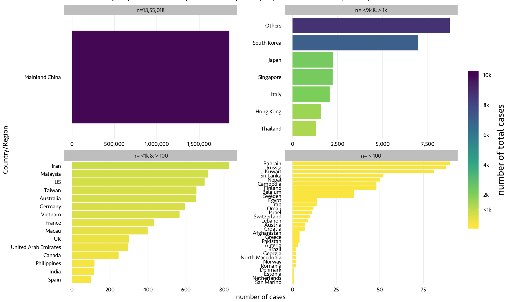
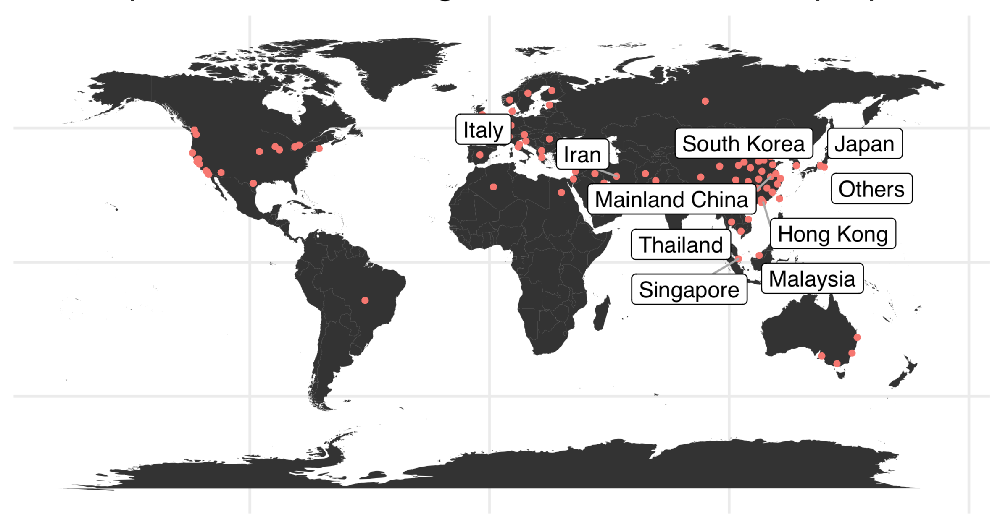
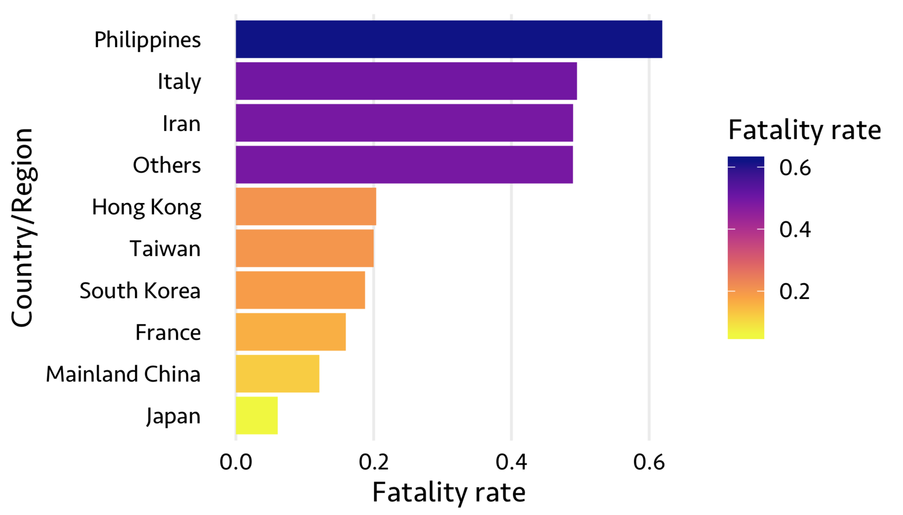
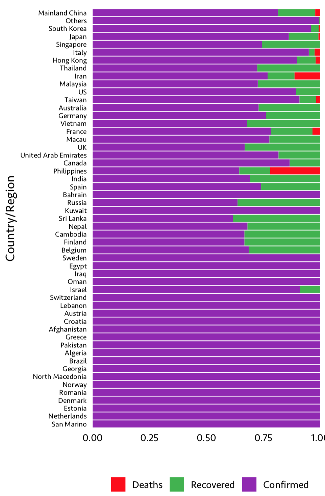
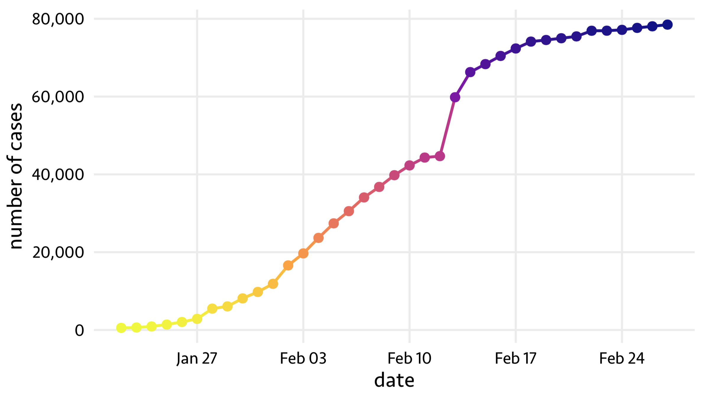
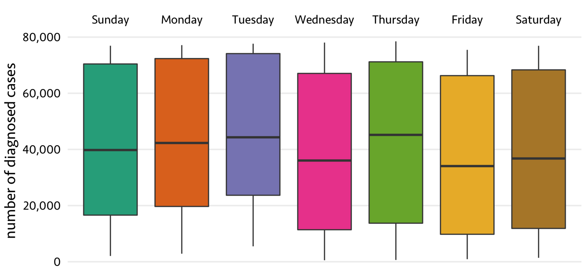
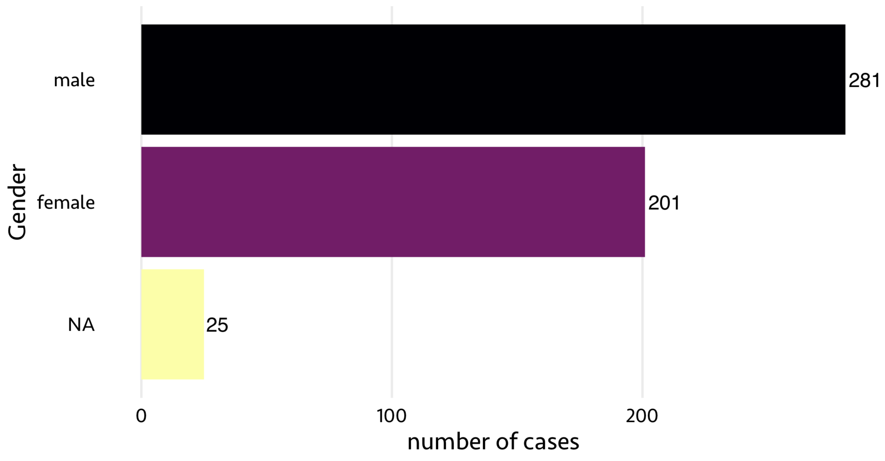
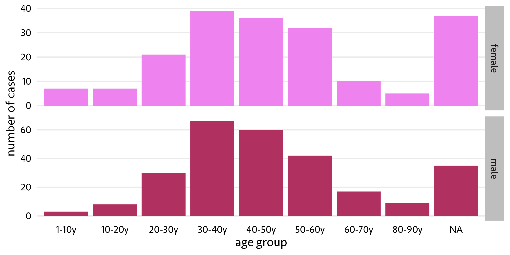
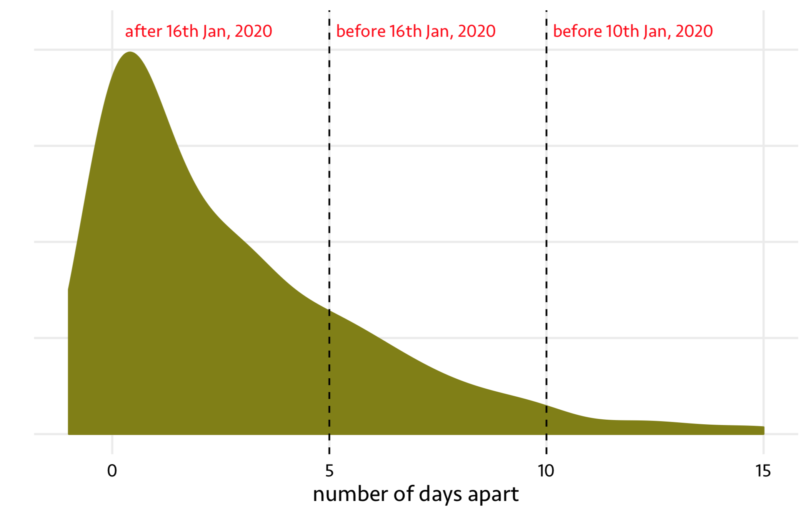

The World Health Organization (WHO) stated the recent outbreak of corona virus (COVID-19) as ’the worldwide spread of a new disease’. WHO further suggests we must be prepared for the global pandemic. The COVID-19 virus belongs to a corona virus family which was not identified before. The closest match of human infected virus has been found in bats (Pangolins), however it might have been mutated within human body to diverge from what has been identified in bats. The first infected person(s) was suspected to work (or got infected from) in wet markets (where people sell meat from diverse animals and flowing water and animal blood is usual) in Wuhan, a city in China.
Scientists are working towards understanding more about the spread of the disease and potential measures to control its widespread. WHO is releasing daily updates on the COVID-19 spread among countries and number of affected people.
Here, I have collected data on COVID-19 spread from different sources and performed an explorative data analysis to observe possible trends.
1. Number of affected people from different countries
As of 27th, Feb, 2020, here are the number of affected people in differnet countries. As China is the origin of the virus, the number is significantly higher in China than any otehr countries (n=18,55,018), however, we should not disregard how fast the virus is spreading in other continents.

2. Top 10 countries with most number of infections
From 22nd Jan - 27th, Feb, 53 countries reported confirmed COVID-19 cases. In the following figure, each red dot represents a region/country with positive case(s). Countries with highlighted names have the highest number of cases so far.

3. Fatality rates of affected countries
Fatality rate is the ratio of deaths to the total number of affected cases due to certain cause. However, here is Richard Müller, professor of physics at UC Berkely, explaining on quora why this is not a proper measure in the case of widespread infections like COVID-19. The proper measure according to his suggestion for fatality rate is deaths/(deaths+recovered). Following figure is an estimate of top 10 countries with highest fatality rate.

Though, the number of infected cases in China is way higher than any other country, the death rate is slightly lesser, for example, compared to Philippines or Italy. However, if we calculate the conventional fatality rate, 2.65% of deaths were reported in COVID-19 confirmed cases worldwide.
There are a number of factors affecting this fatality rate, for example COVID-19 symptoms are very close to general flu, due to this reason many people who had the actual infection might not even visited the hospital before death.
4. Fractions of confirmed, recovered and death cases
Here is the overview of 53 countries with total infected cases divided into confirmed (being treated), recovered and death fractions.

As we can see, the number of people died due to infections in higher in Philippines and Iran comprated to other countries.
5. China: Increase in number of infected cases in 37 days
On 31st December, China reported several cases of unknown pneumonia in Wuhan. On 7th Jan, people identified it as new corona virus (2019-nCoV). However, later efforts led to naming this new virus as COVID-19. As of 22nd Jan, 2020, there were ~540 cases identified to be infected with COVID-19. In a span of 37 days (until 27th Feb, 2020), this number has increased to 78,498 cases. And it is constantly increasing.

This picture is particularly terrifying and warns the world how urgently we need efforts to create vaccines against this virus.
6. China: Were the number of diagnoses high on any weekday?
It would be interesting to see if there are any associations on the weekday and the number of diagnoses reported.

Friday, seems to be having very low number of reported cases. However, it is not significantly differnet than other days. Once the information about the virus has been spread from the officials, people started rushing to hospitals everyday, doesn’t matter weekday or the weekend.
7. China: Any association between Gender and infection?
For 482 infected cases, the gender information is available in one of my collected sources. If we look at the number of males and females affected by COVID-19, it is also not significantly different than weekday as we saw earlier. However, males were affected slightly more than females.

8. China: Age group that is most affected
Similar to gender associations, we can also look at the age distribution of affected people. I divided age ranges into 8 windows, each with 10 years of range. A total of 466 cases were plotted in below figure.

Now, this shows most number of affected individuals are in the age range of 30-40 years. It might be due to these people are traveling between different places a lot than other age groups. And, the infection after age 65-70 years old might even be due to a compromised immune system. However, we do not know the exact reasons for the peak between 30-40 years age range.
9. China: First symptoms and first hospital visit
According to sources, the virus takes 14-15 days to incubate and show symptoms in the host. However, the number of days people took to visit hospital after the first onset of symptoms observed is very high in the beginning. Before 10th Jan, people waited 10-15 days after experiencing symptoms, potentially assuming that it might be general flu and lack of information on the virus spread. However, people started going to the hospitals very quickly.

The initial days where people had no clue about the infection and took longer to visit hospitals after first onset of symptoms might also be one of the reasons for widespread of the infection.
10. Symtoms
Finally, here is a wordcloud of all symptoms repoprted by clinicians observed in patients with COVID-19 infection
Let’s hope COVID-19 infection will not turn into a global pandemic. Our scientists are working hard towards gaining control over the spread.
Check ‘Further reading’ below to get more information and measures of self-care to avoid potential infection.